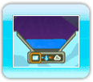
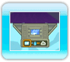

● Seek Out the Rainbow Drops!
The aim of Fluidity is to collect all of the Rainbow Drops scattered around the four chapters of the Aquaticus, which each contain part of the tome’s magical essence. In order to get them, you’ll have to solve devious puzzles and challenges, fix machines, help people, and fight countless enemies!
● Collect Water Bubbles to Get Extra Lives!
The pages of the Aquaticus are, sadly, a dangerous place; even more so now that the Influence is corrupting the environment. In addition to environmental hazards such as sand pits and lava lakes, the Influence has coalesced into various abominations that will try and impede your progress.
Luckily, you can collect water bubbles dotted around the environment to fill up backup water tanks. Once full, these tanks act as extra lives should you lose too much water, so be sure to pick them up should you come across any.
● Button Prompts
 While exploring the pages of the Aquaticus, you may see button prompts that appear on-screen. Simply press the button indicated to interact with the environment. You can flip switches, activate machines, and much, much more!
While exploring the pages of the Aquaticus, you may see button prompts that appear on-screen. Simply press the button indicated to interact with the environment. You can flip switches, activate machines, and much, much more!
● The State Changer
The water inside the Aquaticus can take on three forms: water (liquid), ice (solid), and a steam cloud (gaseous). Initially, you will only be able to access the liquid form until the Aquaticus has enough power to grant you extra abilities.
To change forms, you will find state changers located across the pages of the Aquaticus. Simply enter them, choose the state you’d like to transform into at the base of the state changer with  , and confirm with
, and confirm with  . The following pages describe the various abilities of these states in further detail.
. The following pages describe the various abilities of these states in further detail.


